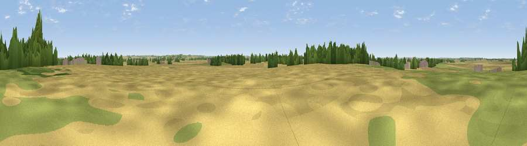

Stubber Hill
#38101 in England · top 67% of its area beats it · near StubtonThe view, rendered

A 360° render of this exact spot computed from the terrain model, tree cover and land cover — summer colours, afternoon light, calibrated against photographs of famous viewpoints. Real trees, hedges and buildings will differ in detail.
The panorama
Grey silhouette: terrain skyline in each direction (720 bearings, Earth curvature and refraction included). Dashed green: skyline with trees (+15 m) and buildings (+8 m) as obstacles. Blue strip: how far the ground is visible on each bearing.
Where the view opens
Wedge length = distance to the farthest visible ground on that bearing (vegetation-aware). Rings at 10, 25 and 50 km.
What fills the view
68% cropland · 20% grassland · 8% woodland · 3% built-up
Angular shares of the visible panorama (visual magnitude), not map area. Landscape diversity 0.39 (0–1 Shannon).
Key numbers
More beautiful places nearby
The staircase of upgrades: each row has a higher view potential than everything closer. Driving times are estimates from straight-line distance, calibrated against real road routing — check an actual route before setting out.
| Place | Direction | Drive | Score |
|---|---|---|---|
| Viewpoint near Dry Doddington | SW · 3 km | ~7 min | 46.5 |
| Viewpoint near Fernwood | W · 6 km | ~13 min | 52.2 |
| Viewpoint near Great Gonerby | SSE · 9 km | ~18 min | 52.5 |
| Viewpoint near Great Gonerby | SSE · 9 km | ~18 min | 62.0 |
| Viewpoint near Belvoir | SSW · 15 km | ~27 min | 70.8 |
| Viewpoint near Woodhouse Eaves | SW · 49 km | ~70 min | 77.7 |
| Viewpoint near Mow Cop | W · 101 km | ~125 min | 78.9 |
| Viewpoint near Mow Cop | W · 101 km | ~126 min | 80.2 |
53.02619, -0.70840 · source: osm peak · position refined by local search. Computed location — check access rights before visiting.